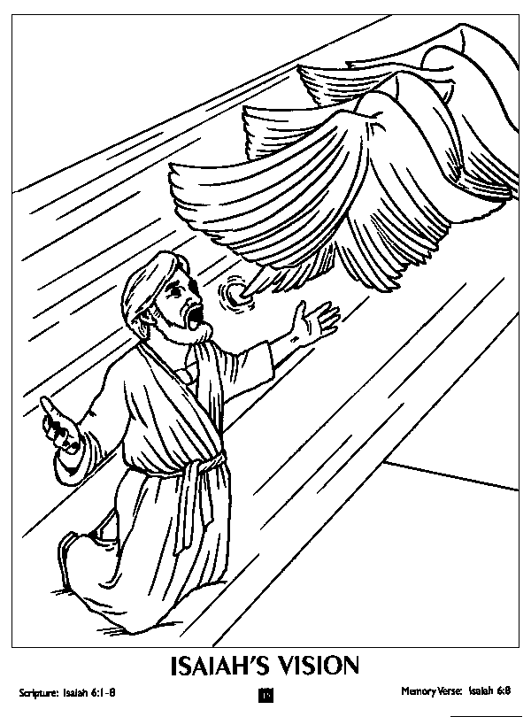

This week's lessons: Isaiah 6:1-8, Psalm 29, Romans 8:12-17, John 3:1-17
Middle-School Pew-work
Where is God asking you to say, “Here I am, send me?” What gifts are you keeping in that could be used for the mission and ministry of Jesus?
______________________________________________________________________________________________________________________________________________________________________________________________________________________________________________________________________________________________________________________________________________________________________________________________________________________________________________________________________________________________________________________________________________________________________________________________________________________________________________________________________________________________________________________________

Next Week: 1 Samuel 17:(1a, 4-11, 19-23), 32-49 and Psalm 9:9-20 or 1 Samuel 17:57-18:5, 18:10-16 and Psalm 133 or Job 38:1-11 and Psalm 107:1-3, 23-32, 2 Corinthians 6:1-13, Mark 4:35-41